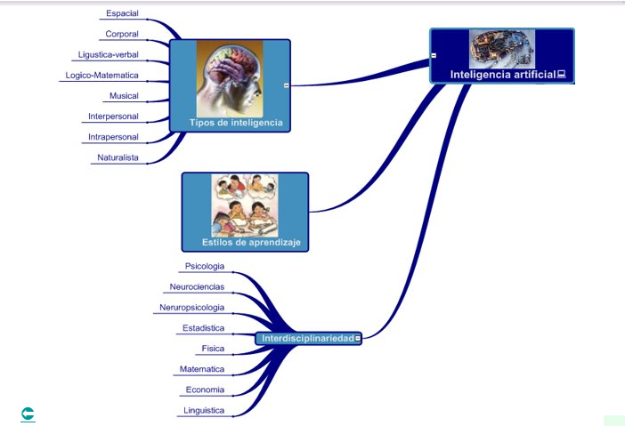

|

INTERDISCLIPLINARIEDAD
La interdisciplinariedad es un enfoque que involucra la colaboración entre diferentes disciplinas o campos de estudio para abordar problemas complejos desde múltiples perspectivas y aprovechar diversos conjuntos de conocimientos y habilidades. En el contexto de la inteligencia artificial (IA), la interdisciplinariedad es fundamental debido a la naturaleza multifacética y compleja de este campo. Aquí hay algunas formas en las que la interdisciplinariedad se manifiesta en la IA:
1. Informática y Matemáticas: La IA se basa en los principios de la informática y las matemáticas para desarrollar algoritmos, modelos y técnicas de procesamiento de datos que son fundamentales para el funcionamiento de los sistemas de inteligencia artificial.
2. Neurociencia y Psicología Cognitiva: La comprensión del funcionamiento del cerebro humano y los procesos cognitivos subyacentes inspira el desarrollo de modelos y algoritmos de IA que imitan la inteligencia humana.
3. Ingeniería y Robótica: La ingeniería y la robótica son campos interdisciplinarios que colaboran estrechamente con la IA para diseñar y construir sistemas autónomos y robots que pueden interactuar con el entorno de manera inteligente y adaptativa.
4. Lingüística y Procesamiento del Lenguaje Natural: La lingüística y el procesamiento del lenguaje natural son disciplinas que contribuyen al desarrollo de sistemas de IA capaces de comprender, analizar y generar lenguaje humano de manera efectiva.
5. Estadística y Aprendizaje Automático: La estadística proporciona las bases teóricas para muchos algoritmos de aprendizaje automático y técnicas de modelado utilizadas en la IA para analizar datos, identificar patrones y hacer predicciones.
6, Ética y Filosofía: La ética y la filosofía juegan un papel importante en la discusión de los impactos sociales, éticos y morales de la IA, así como en el desarrollo de políticas y regulaciones para su uso responsable.
7. Medicina y Ciencias de la Salud: La medicina y las ciencias de la salud colaboran con la IA en áreas como el diagnóstico médico, el descubrimiento de medicamentos, la atención personalizada y la gestión de datos clínicos.
8. Economía y Ciencias Sociales: La economía y las ciencias sociales se relacionan con la IA en el estudio de sus impactos en el empleo, la desigualdad, el comportamiento del consumidor y otros aspectos de la sociedad y la economía.
La interdisciplinariedad en la IA es crucial para abordar los desafíos complejos y aprovechar las oportunidades emergentes en este campo en constante evolución. Al integrar conocimientos y enfoques de diversas disciplinas, se pueden desarrollar soluciones más completas, éticas y sostenibles para los problemas relacionados con la inteligencia artificial.
Video sobre las etapas de la IA:
|